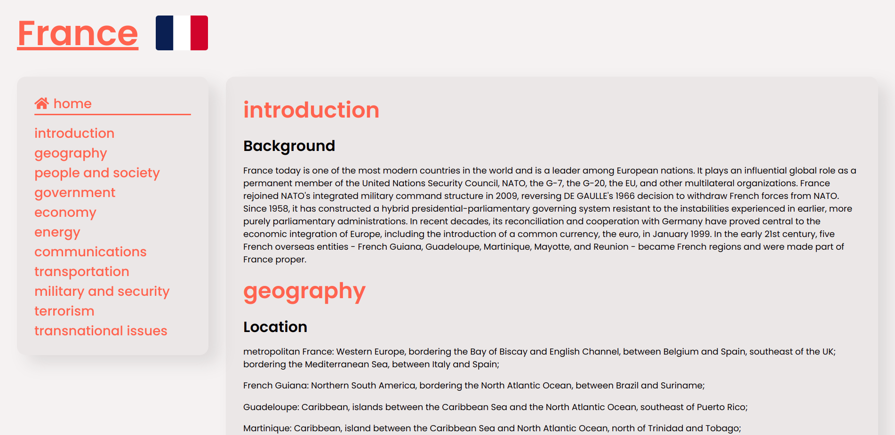

Projekt se zabývá prací s daty. Tento projekt se skládá z několika programů. Nabízí funkcionality na dolování dat, na převod dat do různých formátů nebo jejich validaci. Používám různé xml technologie, ale také Javascript.
Program umí dolovat data z html stránek. Umí data převést do xml formátu. Dále nabízí možnost převedení dat do pdf, html i ePub formátů. Projekt má i automatizované řešení pomocí scriptů.
První funkcionalitou je vytáhnutí dat a přetvoření jich do XML formátu. Na to slouží jednoduchá Nodejs aplikace. Tato aplikace očekává na vstupu různý počet webových stránek, které naparsuje a vhodně reprezentuje v xml.
Druhá důležitá funkcionalita je přetvoření XML dat do ostatních formátů. Výsledkem jsou webové stránky, které nabízejí funkce jako například meníčka a podobné. Výsledné pdf také obsahuje meníčka s interními linky podobně jako i ePub výstup.
Využil jsem technologie Javascript (konkrétně Nodejs), XSLT, XSLFO. Pro validaci xml používám DTD a RNG schémata. Dále vše propojuji několika bashovými scripty. Používám také veřejné programy využívající Javu.
Nodejs využívám na transformaci webových stránek na XML formát. Používám k tomu knihovnu HTMLParser, kterou si snadně nainstaluji pomocí npm. Program si hravě poradí s HTML a jeho záludnostmi a speciálními znaky.
Na vygenerované xml dokumenty mám 2 validační schémata. První jednodušší je ve formátu DTD. To druhé složitější, které nabízí větší možnosti validace je v RNG. Rng soubor vygeneruji z RNC gramatiky.
Pro vytvoření HTML stránek používám Java program Saxon. Tento program na vstupu dostane XML data a XSLT stylesheet a z nich vygeneruje HTML. Pro stylování těchto HTML stránek používám externí CSS. Pro pdf využívám XSLFO stylování.
Program obsahuje řadu bashovách scriptů, které mi usnadňují vývoj i samotné používání všech programů. Každá funkcionalita má svůj vlastní script, který vykoná potřebné příkazy. Projekt obsahuje i script, který spouští vše naráz.
zveřejněná implementace na mém GitHubu